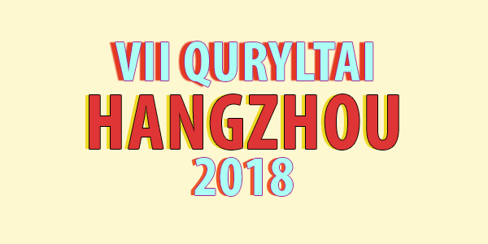

Объединение и развитие казахстанской молодежи
Что такое Курултай?
Ассоциация казахстанских студентов в Китае (KSAC) проводят различные интересные мероприятия и одним из главных мероприятий является ежегодный КУРУЛТАЙ.
Курултай - это масштабное событие, которое проводится с 2011 года для объединения всех студентов из Казахстана. Это грандиозное мероприятие уже проходило в таких городах, как: Шанхай, Пекин, Далянь, Ухань, Чунцин, Нанкин.
В этом году организаторами мероприятия являются KSAC совместно со студенческой организацией Campzhou в городе Ханчжоу. В нем примут участие более 100 казахстанских студентов из 14 городов Китая. Гостями курултая будут представители посольства РК в КНР; крупные китайские компании, как: Alibaba Group, Sunbao, Huawei и др. Также примут участие и поделятся своим огромным опытом специалисты по ведению международного бизнеса.
Конечно же, предусмотрена культурно-развлекательная программа и осмотр достопримечательностей города Ханчжоу. Курултай направлен на объединение и развитие самоорганизации казахстанской молодежи в Китае. Уже в эту пятницу, 15 июня! Будьте в курсе событий вместе с @ksac_hangzhou и @campzhou